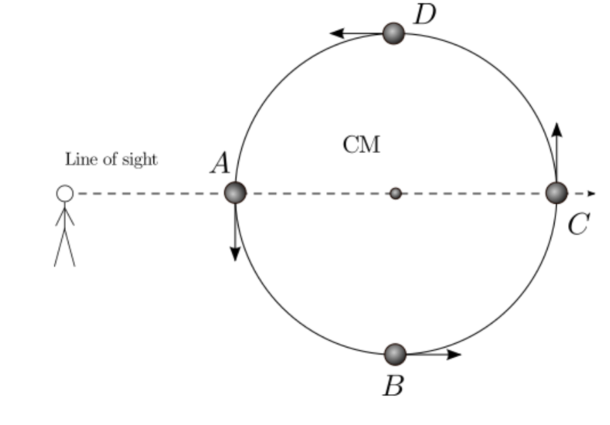

Forrige side🙂 🙁Radiell-hastighetsmetoden
Fikk du at også hastigheten er en sinuskurve? Kan du nå se for deg hvordan stjerna beveger seg? Og hvorfor? Det er viktig at du faktisk har laget teningen da vi skal bruke den videre!
Tenk før du trykker her
Vi lærte i del 1B at når en planet går i bane omkring en stjerne, så går jo både stjerna og planeten i bane omkring et felles massesenter. Hvis stjerna har en planet i bane rundt seg, så vil altså stjerna gå i bane om massesenteret med planeten. Vi skal i hele del 1C alltid anta sirkelbaner for å gjøre det lettere å regne. De fleste planetbaner (og dermed stjernebaner) har lav eksentrisitet og er tilnærmet sirkulære, dette er derfor en god antakelse. Vi ser altså Doppler-effekten fra lyset til stjerna fordi stjerna går i en sirkelbane. Her har vi det: 
Før du går videre: merk av punktene A, B, C og D i hastighetsplottet ditt! Neste side